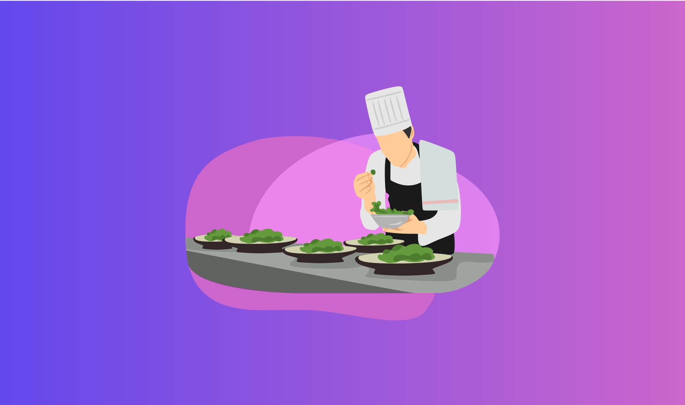
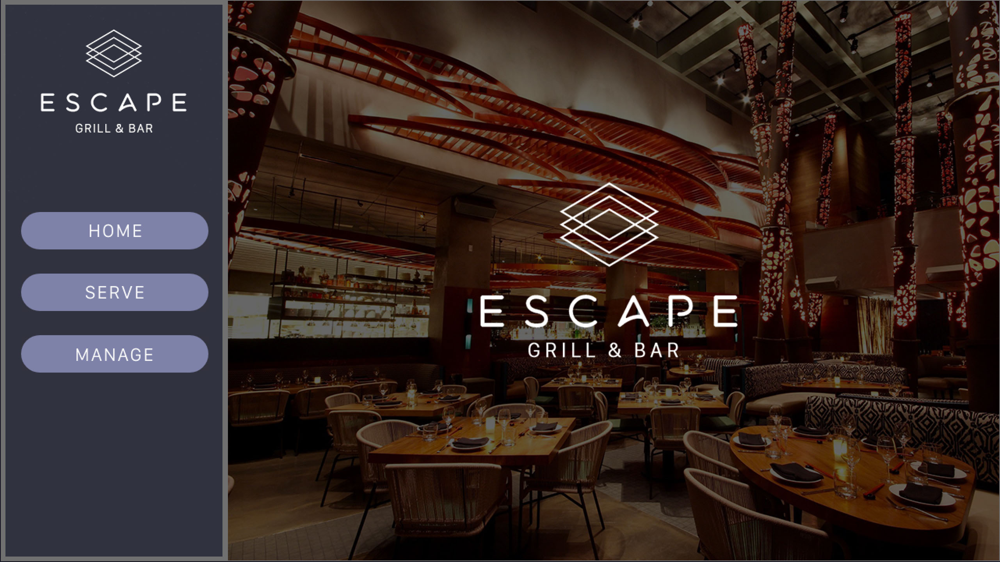
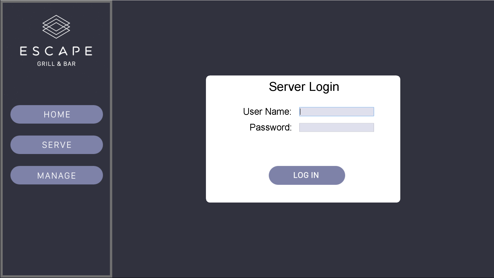
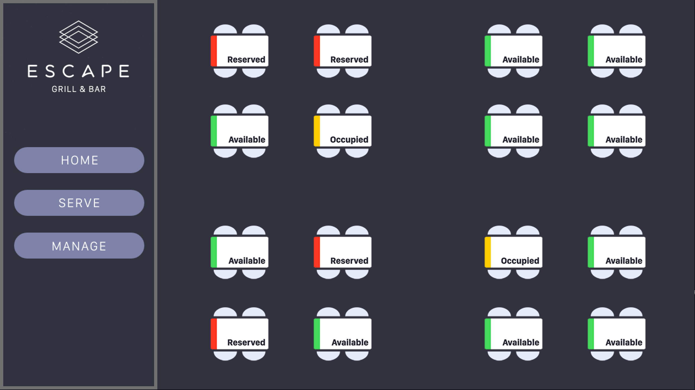
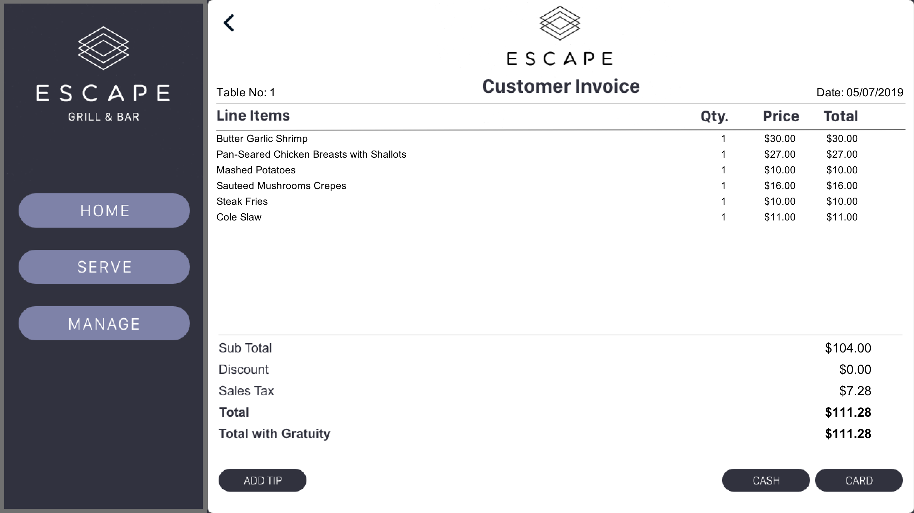
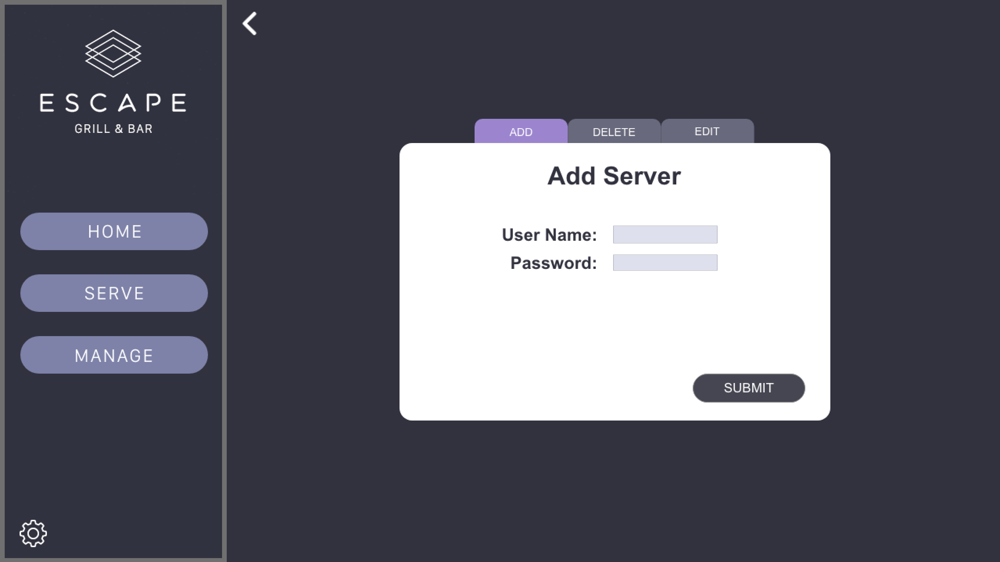

PROJECT
Restaurant Point of Sale System
April 25 2018
TOOLS USED
- Java
- Adobe Photoshop (Image Assets)
- Adobe Xd (Wireframing)
First OOP Class
CSCI-212: Introduction to Object-Oriented Programming was my first exposure to Java. Over the course of 4 months, our class was introduced to the 4 paradigms (Encapsulation, Abstraction, Polymorphism and Inheritance ) of Object-Oriented Programming. For me, Java had a steep learning curve, but by the end of the semester, I grew to love the language. It was well structured and strongly object-oriented; a drastic change from the languages I had learned before (Racket, Lisp).
This class was intense. It had weekly coding projects, quizzes and assignments but I enjoyed every part of it. It was the first time I realized that my fear of failing to learn programming languages was irrational. I used to think that one needs to be a gifted genius to learn how to code. The weekly projects helped me understand that programming is akin to solving puzzles. I used to sit for hours looking at the assignments, trying to figure out each part until it clicked. The joy it felt to run the code without any errors was truly satisfying.
The last section of this class was the final project which required students to create a Point of Sale System for a restaurant. A short client brief was provided to us listing the components that the restaurant system required.
Client Brief
You are hired to create a project that will mimic a Point of Sale System that a restaurant will use to enter their orders. These systems are used for their kitchen staff to receive the order and handle payments. This system will keep track of all the information necessary for the server to select the entrees and sides that the customers at a table will order. It will also offer a payment method. The System can be boiled down into 3 Perspectives.
- Server’s Perspective:
The server should be able to log in with a unique User ID and password. The server should be able to create and manage multiple tables. Each table will be able to hold up to four customers. When a table is created and selected the server should be able to select an entrée option and two sides with it. Once the order is ready it can be sent to the kitchen (will display a confirmation notification). - Manager’s Perspective:
A manager will be able register and login with a unique User ID and password. The manager can delete and add new servers to the system. The Manager should also be able to access each table on the System and provide discounts to any bill. - Payment Perspective:
There should be a payment method where a customer can pay their bill. For each table a formatted receipt can be printed. Then an option to pay for the bill using cash or a phony credit card number with pin. The manager could perhaps use this perspective to apply the discount’s using their password.
Software Development
This section was my favorite part of the class. I had absolute independence in designing the software. I used Adobe Xd to create a simple user story that would show the steps a waiter would have to take to reserve a table, place orders and finally, create a customer invoice. While designing the user interface, I would constantly think about the code I would have to write to create those features. That is when I learned how to decide what classes to create and how to structure their flow. After designing and re-designing numerous UML Diagrams and endless nights of coding, here are the pictures of the final product:
Home page of the software
Log-In Page for Servers
Red tables are already reserved. Yellow tables are being served by other waiters. Green tables are still available to customers.

Menu for selecting entrees

Menu for selecting sides
Checkout page with order summary
Managers can add, delete or edit servers in the database